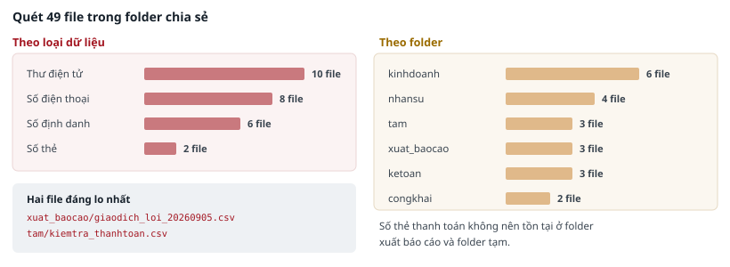
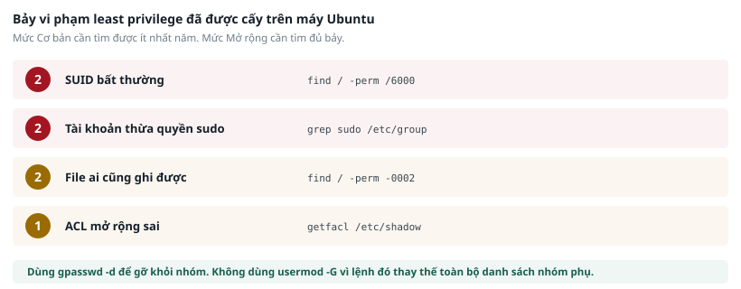
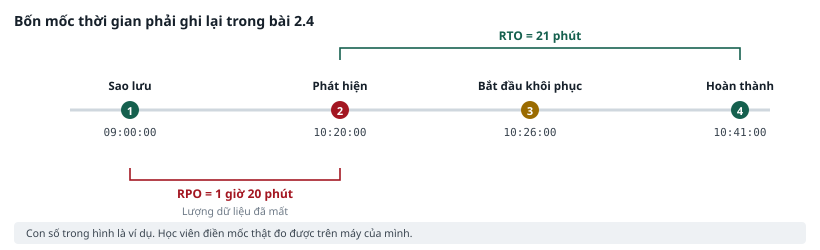

PHẦN I · BÀI THỰC HÀNH CHUYÊN ĐỀ 2#
Bảo vệ dữ liệu trong vận hành hằng ngày
- Tìm dữ liệu cá nhân đang nằm rải rác trong hệ thống file
- Phát hiện và sửa vi phạm least privilege
- Ba cách mã hoá và câu hỏi khoá nằm ở đâu
- Khôi phục sau sự cố và đo hai con số RTO, RPO
THỜI LƯỢNG 30 PHÚT
Bài 2.1 · Data classification và quét dữ liệu cá nhân#
Mục tiêu: tìm được dữ liệu cá nhân đang nằm rải rác trong hệ thống file và xếp mỗi file vào đúng mức phân loại.
Điều kiện tiên quyết#
- Đã hoàn thành bài 1.2 và có bảng asset inventory.
- Máy Kali đang bật.
Dữ liệu và công cụ#
| Hạng mục | Chi tiết |
|---|---|
| Máy sử dụng | Kali |
| Công cụ | grep, find, wc |
| Folder dữ liệu | ~/lab/dulieu/hosokinhdoanh/ — 49 file mô phỏng folder chia sẻ của công ty |
CẢNH BÁO
Chỉ quét trong folder ~/lab/dulieu. Không chạy lệnh quét lên toàn bộ ổ đĩa của máy ảo, và tuyệt đối không chạy lên máy tính cá nhân hoặc hệ thống của đơn vị.

Bốn mức phân loại sử dụng trong bài#
| Mức | Định nghĩa | Biện pháp bắt buộc tối thiểu |
|---|---|---|
| Công khai | Được phép công bố, lộ ra không gây thiệt hại | Bảo vệ tính toàn vẹn, chống sửa đổi trái phép |
| Nội bộ | Dùng trong tổ chức, lộ ra gây bất lợi nhưng không nghiêm trọng | Chỉ chia sẻ trong miền tài khoản của đơn vị |
| Bảo mật | Lộ ra gây thiệt hại đáng kể về tài chính, pháp lý hoặc uy tín | Mã hoá khi lưu và khi truyền, RBAC, ghi log truy cập |
| Tuyệt mật | Lộ ra gây thiệt hại nghiêm trọng hoặc vi phạm pháp luật | Danh sách truy cập phê duyệt từng người, giám sát mọi lần truy cập, cấm sao chép ra ngoài |
Các bước thực hiện#
Bước 1 — Xem qua folder cần quét
Bước 1
cd ~/lab/dulieu/hosokinhdoanh
# Đếm số file và xem cấu trúc folder
find . -type f | wc -l
ls -R | head -40
Bước 2 — Quét tìm số định danh cá nhân
Số căn cước công dân Việt Nam có 12 chữ số và bắt đầu bằng chữ số 0. Biểu thức dưới đây tìm các chuỗi khớp hình thức đó.
Bước 2
# Quét tìm số định danh cá nhân 12 chữ số
grep -rnP '\b0\d{11}\b' . --include="*.txt" --include="*.csv" \
| head -20
# Chỉ đếm số file có chứa, không in nội dung
grep -rlP '\b0\d{11}\b' . --include="*.txt" --include="*.csv" \
| wc -l
# Giải thích tuỳ chọn:
# -r quét đệ quy trong folder con
# -n in kèm số dòng
# -l chỉ in tên file, không in nội dung dòng
# -P dùng biểu thức chính quy kiểu Perl
# \b ranh giới từ, tránh khớp vào giữa một chuỗi số dài hơn
Bước 3 — Quét ba loại dữ liệu còn lại
Bước 3
# Số điện thoại di động Việt Nam
grep -rlP '\b(\+84|0)(3|5|7|8|9)\d{8}\b' . --include="*.txt" --include="*.csv"
# Địa chỉ thư điện tử
grep -rlP '[A-Za-z0-9._%+-]+@[A-Za-z0-9.-]+\.[A-Za-z]{2,}' . \
--include="*.txt" --include="*.csv"
# Số thẻ thanh toán
grep -rlP '\b(?:4\d{12}(?:\d{3})?|5[1-5]\d{14}|3[47]\d{13})\b' .
Bước 4 — Loại bớt kết quả sai
Regex chỉ khớp theo hình thức, không xác minh dữ liệu có thật hay không. Mã đơn hàng, mã sản phẩm và số tài khoản nội bộ cũng có dạng chuỗi số tương tự. Mở thử ba file và tự đánh giá.
Bước 4
# Xem ngữ cảnh quanh dòng khớp để đánh giá đúng sai
grep -rnP '\b0\d{11}\b' . --include="*.csv" -B1 -A1 | head -30
# Với số thẻ thanh toán, kiểm tra thêm bằng thuật toán Luhn
python3 ~/lab/congcu/kiem_luhn.py < ketqua_the.txt
Kết quả mong đợi#
| Loại dữ liệu | Số file chứa | Ghi chú |
|---|---|---|
| Số định danh cá nhân | 6 | Tập trung ở folder nhân sự, kế toán và xuất báo cáo |
| Số điện thoại | 8 | Có cả trong file danh bạ nội bộ, thuộc mức Nội bộ |
| Địa chỉ email | 10 | Phần lớn là địa chỉ nội bộ, mức thấp hơn |
| Số thẻ thanh toán | 2 | Một ở folder xuất báo cáo, một ở folder tạm. Cả hai đều không nên tồn tại ở đó |
LƯU Ý
Con số cụ thể có thể lệch một hai file tuỳ cách đặt tuỳ chọn --include. Điều quan trọng không phải là con số chính xác mà là nhận ra dữ liệu nhạy cảm đang nằm ở những nơi không ai kiểm kê.
Phiếu ghi nhận 2.1#
Làm bài ngay tại đây · Phiếu ghi nhận 2.1
| # | Đường dẫn file | Loại dữ liệu | Mức phân loại | Hành động đề xuất |
|---|---|---|---|---|
| 1 | ./nhansu/hopdong_2026.csv | Số định danh | Tuyệt mật | Chuyển vào folder có kiểm soát truy cập, mã hoá khi lưu |
| 2 | ||||
| 3 | ||||
| 4 | ||||
| 5 | ||||
| 6 |
Mức mở rộng#
- Viết một lệnh duy nhất sinh ra báo cáo dạng bảng: mỗi dòng gồm tên file và số lượng kết quả khớp của từng loại dữ liệu.
- Kết quả quét của chính bài này là dữ liệu nhạy cảm. Nếu lưu lại, phải xếp vào mức phân loại nào và bảo vệ ra sao?
Xử lý sự cố#
| Hiện tượng | Cách khắc phục |
|---|---|
| grep báo lỗi tuỳ chọn -P không hỗ trợ | Bản grep đang dùng không có hỗ trợ biểu thức Perl. Thay bằng: grep -rlE với cú pháp mở rộng, hoặc dùng file thay thế trong ~/lab/congcu |
| Kết quả quá nhiều, không đọc được | Dùng tuỳ chọn -l để chỉ liệt kê tên file thay vì in toàn bộ dòng khớp |
| Không tìm thấy file nào | Kiểm tra đang đứng đúng folder bằng lệnh pwd. Kiểm tra tuỳ chọn --include có đúng phần mở rộng của file không |
THỜI LƯỢNG 40 PHÚT
Bài 2.2 · Rà soát và khắc phục phân quyền#
Mục tiêu: phát hiện và sửa các vi phạm nguyên tắc least privilege đã được cấy sẵn trên server Ubuntu.
Điều kiện tiên quyết#
- Máy Ubuntu đang bật và đăng nhập được.
- Trợ giảng đã chạy kịch bản cấy lỗi. Nếu chưa, báo trước khi bắt đầu.
- Đã tạo snapshot trước khi vào bài, để rollback nếu thao tác sai.
CẢNH BÁO
Đây là bài duy nhất của Chuyên đề 2 có thao tác sửa đổi hệ thống thật. Chỉ thao tác trên máy Ubuntu của lab. Sai một lệnh chmod trên folder hệ thống có thể làm máy không khởi động lại được — đó là lý do bắt buộc chụp trạng thái trước.

Bốn nhóm vi phạm cần tìm#
| Nhóm | Vì sao nguy hiểm | Lệnh phát hiện |
|---|---|---|
| File có bit đặc quyền bất thường | File chạy với quyền của chủ sở hữu chứ không phải của người gọi. Nếu chủ sở hữu là root thì bất kỳ ai chạy được file đó đều có quyền root | find với tuỳ chọn -perm /6000 |
| Tài khoản thừa quyền nâng đặc quyền | Tài khoản không cần quyền quản trị nhưng vẫn nâng được quyền, mở rộng thiệt hại khi bị chiếm | sudo -l -U và grep trong file cấu hình |
| File và folder ai cũng ghi được | Kẻ tấn công có thể thay thế nội dung file cấu hình hoặc kịch bản đang chạy | find với tuỳ chọn -perm -0002 |
| Danh sách kiểm soát truy cập mở rộng sai | Quyền cấp thêm ngoài quyền cơ bản, không nhìn thấy bằng lệnh ls thông thường | getfacl |
Các bước thực hiện#
Bước 1 — Phát hiện file có bit đặc quyền bất thường
Bước 1
# Liệt kê toàn bộ file có bit đặc quyền
find / -perm /6000 -type f 2>/dev/null | grep -v "snap\|proc" \
| sort > /tmp/suid_hientai.txt
# So sánh với danh sách chuẩn của bản phân phối đã cấp sẵn
diff /tmp/suid_hientai.txt /var/lab/chuan/suid_chuan.txt
# Những dòng có dấu < ở đầu là file có thêm so với chuẩn.
# Đây chính là các file cần điều tra.
Với mỗi file lệch so với chuẩn, xem thời điểm tạo và chủ sở hữu để đánh giá.
Xem chi tiết
# Xem chi tiết một file nghi vấn
ls -la <đường_dẫn_file>
stat <đường_dẫn_file>
Bước 2 — Phát hiện tài khoản thừa quyền
Bước 2
# Liệt kê thành viên các nhóm có quyền nâng đặc quyền
grep -E '^(sudo|adm|wheel):' /etc/group
# Xem quyền cụ thể của một tài khoản
sudo -l -U <tên_tài_khoản>
# Tìm các dòng cấu hình cho phép nâng quyền không cần mật khẩu
sudo grep -rn "NOPASSWD" /etc/sudoers /etc/sudoers.d/ 2>/dev/null
# Tìm tài khoản có định danh bằng 0 nhưng không phải root
awk -F: '($3==0){print $1}' /etc/passwd
Đối chiếu danh sách tài khoản tìm được với file danh_sach_nhan_su.csv. Tài khoản nào có quyền nâng đặc quyền nhưng không thuộc bộ phận công nghệ thông tin hoặc vận hành hệ thống là điểm cần xử lý.
Bước 3 — Phát hiện file ai cũng ghi được
Bước 3
# Tìm file và folder ai cũng ghi được, loại trừ các folder tạm hợp lệ
find / -xdev -perm -0002 -not -path "*/proc/*" -not -path "*/tmp/*" \
-not -path "*/var/tmp/*" 2>/dev/null | head -20
# Riêng với folder, kiểm tra có bit dính hay không
# Folder dùng chung mà thiếu bit dính thì người này xoá được file của người kia
find / -xdev -type d -perm -0002 ! -perm -1000 2>/dev/null
Bước 4 — Kiểm tra ACL mở rộng
Bước 4
# Xem quyền mở rộng của các file quan trọng
getfacl /etc/passwd /etc/shadow /var/www/html 2>/dev/null
# Tìm mọi file có quyền mở rộng trong folder ứng dụng
getfacl -R /var/www 2>/dev/null | grep -B3 "^user:[a-z]"
Bước 5 — Khắc phục
Bước 5
# Gỡ bit đặc quyền khỏi file không cần
sudo chmod u-s <đường_dẫn_file>
# Sửa quyền folder về đúng chuẩn
sudo chmod 750 <đường_dẫn_folder>
# Gỡ tài khoản khỏi nhóm có quyền nâng đặc quyền
sudo gpasswd -d <tên_tài_khoản> sudo
# Sửa quyền mở rộng
sudo setfacl -m u:webuser:r-- /var/www/html/config.php
# Xác minh lại sau khi sửa
sudo -l -U <tên_tài_khoản>
ls -la <đường_dẫn_file>
CẢNH BÁO
Không dùng lệnh usermod với tuỳ chọn -G để gỡ tài khoản khỏi một nhóm. Lệnh đó thay thế toàn bộ danh sách nhóm phụ, nên sẽ vô tình gỡ luôn các nhóm cần giữ.
Dùng gpasswd -d như trong ví dụ trên. Lệnh này chỉ gỡ đúng một nhóm được chỉ định.
Kết quả mong đợi#
Kịch bản cấy lỗi đặt vào máy Ubuntu đúng bảy vi phạm. Học viên mức Cơ bản cần tìm được ít nhất năm, mức Mở rộng cần tìm đủ bảy.
| Nhóm vi phạm | Số lượng đã cấy |
|---|---|
| File có bit đặc quyền bất thường | 2 |
| Tài khoản thừa quyền nâng đặc quyền | 2 |
| File hoặc folder ai cũng ghi được | 2 |
| Danh sách kiểm soát truy cập mở rộng sai | 1 |
Phiếu ghi nhận 2.2 — Báo cáo rà soát phân quyền#
Làm bài ngay tại đây · Phiếu ghi nhận 2.2 — Báo cáo rà soát phân quyền
| # | Đối tượng | Quyền hiện tại | Quyền nên có | Mức rủi ro | Hành động đã làm | Kết quả xác minh |
|---|---|---|---|---|---|---|
| 1 | /usr/local/bin/backup.sh | -rwsr-xr-x root | -rwxr-x--- root | Cao | chmod u-s và chmod 750 | Đã xác minh bằng ls -la |
| 2 | ||||||
| 3 | ||||||
| 4 | ||||||
| 5 | ||||||
| 6 | ||||||
| 7 |
Mức mở rộng#
- Trong bốn nhóm vi phạm, nhóm nào có thể phát hiện tự động theo chu kỳ mà không cần người? Viết một lệnh chạy được trong scheduled task.
- Một trong hai tài khoản thừa quyền thuộc về người đã nghỉ việc theo hồ sơ nhân sự. Ngoài việc gỡ quyền, quy trình nào của tổ chức đã thất bại?
Xử lý sự cố#
| Hiện tượng | Cách khắc phục |
|---|---|
| find in ra rất nhiều lỗi Permission denied | Đây là hiện tượng bình thường. Phần 2>/dev/null ở cuối lệnh đã ẩn các lỗi này. Nếu vẫn thấy, kiểm tra đã gõ đủ phần đó chưa |
| Lỡ chạy chmod sai lên folder hệ thống | Dừng lại ngay, không sửa tiếp. Tắt máy ảo và khôi phục snapshot. Mất 2 phút |
| getfacl báo lệnh không tồn tại | Chạy: sudo apt install acl. Nếu không có mạng, báo trợ giảng |
| Không tìm thấy file suid_chuan.txt | Kịch bản cấy lỗi chưa chạy. Báo trợ giảng trước khi làm tiếp |
THỜI LƯỢNG 20 PHÚT
Bài 2.3 · Mã hoá dữ liệu khi lưu và khi truyền#
Mục tiêu: thực hiện ba cách mã hoá và trả lời được câu hỏi khoá đang nằm ở đâu, ai truy cập được.
Điều kiện tiên quyết#
- Máy Ubuntu đang bật.
- Đã hoàn thành bài 2.1 để biết file nào cần mã hoá.
Các bước thực hiện#
Bước 1 — Mã hoá một file bằng cặp khoá
Bước 1
cd ~/lab/thuchanh
# Tạo cặp khoá. Khi được hỏi, chọn loại mặc định,
# đặt tên là Hoc Vien, thư điện tử là hocvien@minhan.local
gpg --gen-key
# Xem khoá vừa tạo
gpg --list-keys
# Mã hoá một file
gpg -e -r "hocvien@minhan.local" baocao_ketoan.pdf
# Kiểm tra: file gốc và file đã mã hoá cùng tồn tại
ls -la baocao_ketoan.pdf*
# Giải mã để xác minh
gpg -d baocao_ketoan.pdf.gpg > kiemtra.pdf
cmp baocao_ketoan.pdf kiemtra.pdf && echo "Hai file giống hệt nhau"
LƯU Ý
Lệnh mã hoá không tự xoá file gốc. Trong thực tế, mã hoá mà vẫn để file gốc nằm cạnh là không có tác dụng bảo vệ. Đây là lỗi rất thường gặp.
Bước 2 — Mã hoá bằng mật khẩu chung
Bước 2
# Mã hoá bằng thuật toán đối xứng, dùng mật khẩu
openssl enc -aes-256-cbc -pbkdf2 -iter 100000 \
-in danhsach_khachhang.csv -out danhsach_khachhang.bin
# Giải mã
openssl enc -d -aes-256-cbc -pbkdf2 -iter 100000 \
-in danhsach_khachhang.bin -out kiemtra.csv
# So sánh
cmp danhsach_khachhang.csv kiemtra.csv && echo "Khớp"
Bước 3 — Kiểm tra cấu hình mã hoá đường truyền
Bước 3
# Trên Kali: kiểm tra dịch vụ web của firewall
nmap --script ssl-enum-ciphers -p 443 192.168.20.1 | head -30
# Xem thông tin chứng thư số
echo | openssl s_client -connect 192.168.20.1:443 2>/dev/null \
| openssl x509 -noout -subject -issuer -dates
# Kiểm tra chứng thư còn hạn trên 30 ngày hay không
echo | openssl s_client -connect 192.168.20.1:443 2>/dev/null \
| openssl x509 -noout -checkend 2592000 \
&& echo "Còn hạn trên 30 ngày" || echo "Sắp hết hạn hoặc đã hết hạn"
Đối chiếu kết quả với hiện tượng quan sát được ở bài 1.1: trình duyệt cảnh báo chứng thư không hợp lệ. Lý do nằm ở dòng thông tin về đơn vị cấp chứng thư.
Phiếu ghi nhận 2.3#
Làm bài ngay tại đây · Phiếu ghi nhận 2.3
| Câu hỏi | Trả lời của học viên |
|---|---|
| Khoá riêng vừa tạo được lưu ở folder nào trên máy? | |
| Ai trên máy này đọc được khoá riêng đó? | |
| Nếu máy bị mất, kẻ lấy được máy có giải mã được file không? Cần thêm điều kiện gì? | |
| Chứng thư của firewall do đơn vị nào cấp? Vì sao trình duyệt cảnh báo? | |
| Mã hoá ổ đĩa có bảo vệ được trước tấn công ransomware không? Vì sao? |
Mức mở rộng#
- Tạo một phân vùng mã hoá bằng cryptsetup trên ổ đĩa phụ của máy ảo, gắn vào hệ thống và ghi thử dữ liệu.
- Nếu tổ chức có 200 nhân viên và mỗi người tự tạo khoá riêng, vấn đề vận hành nào phát sinh khi một người nghỉ việc?
THỜI LƯỢNG 30 PHÚT
Bài 2.4 · Backup, khôi phục và đo thời gian#
Mục tiêu: khôi phục dữ liệu sau một sự cố mô phỏng và đo được hai con số RTO và RPO thực tế.
Điều kiện tiên quyết#
- Máy Ubuntu đang bật.
- Có quyền chạy lệnh với sudo.
- Đã chụp trạng thái trước bài.

Hai con số cần đo#
| Chỉ số | Định nghĩa | Cách đo trong bài này |
|---|---|---|
| RTO | Khoảng thời gian từ khi phát hiện sự cố đến khi dữ liệu hoạt động trở lại | Mốc phát hiện trừ đi mốc hoàn thành khôi phục |
| RPO | Khối lượng dữ liệu tính theo thời gian bị mất khi sự cố xảy ra | Thời điểm sự cố trừ đi thời điểm backup gần nhất |
Các bước thực hiện#
Bước 1 — Khởi tạo kho backup và backup lần đầu
Bước 1
# Khởi tạo kho. Khi được hỏi mật khẩu, dùng: LabMinhAn2026
sudo restic init --repo /mnt/backup/kho
# Ghi lại thời điểm và backup folder dữ liệu
date "+%H:%M:%S" | tee /tmp/moc_1_saoluu.txt
sudo restic -r /mnt/backup/kho backup /var/duLieu
# Xem danh sách bản backup
sudo restic -r /mnt/backup/kho snapshots
Bước 2 — Ghi nhận trạng thái trước sự cố
Bước 2
# Đếm số file và tính tổng dung lượng để so sánh về sau
find /var/duLieu -type f | wc -l
du -sh /var/duLieu
# Ghi lại hash của toàn bộ folder
find /var/duLieu -type f -exec sha256sum {} \; \
| sort > /tmp/bangbam_truoc.txt
wc -l /tmp/bangbam_truoc.txt
Bước 3 — Giảng viên mô phỏng sự cố
Giảng viên chạy kịch bản mã hoá folder dữ liệu trên toàn bộ máy của lớp cùng một thời điểm. Học viên không chạy lệnh nào ở bước này, chỉ ghi lại thời điểm phát hiện.
Bước 3
# Ngay khi phát hiện dữ liệu không mở được, ghi mốc thời gian
date "+%H:%M:%S" | tee /tmp/moc_2_phathien.txt
# Quan sát hiện trạng
ls -la /var/duLieu/ | head -20
# Thử mở một file để xác nhận
head -c 200 /var/duLieu/<một_file_bất_kỳ>
Bước 4 — Khôi phục
Bước 4
# Ghi mốc bắt đầu khôi phục
date "+%H:%M:%S" | tee /tmp/moc_3_batdau.txt
# Xem lại danh sách bản backup và chọn bản phù hợp
sudo restic -r /mnt/backup/kho snapshots
# Khôi phục bản mới nhất
sudo restic -r /mnt/backup/kho restore latest --target /
# Ghi mốc hoàn thành
date "+%H:%M:%S" | tee /tmp/moc_4_hoanthanh.txt
Bước 5 — Xác minh khôi phục đúng và đủ
Bước 5
# Tính lại hash và so sánh với trạng thái trước sự cố
find /var/duLieu -type f -exec sha256sum {} \; \
| sort > /tmp/bangbam_sau.txt
diff /tmp/bangbam_truoc.txt /tmp/bangbam_sau.txt \
&& echo "Khôi phục đầy đủ, không thiếu file nào" \
|| echo "Có chênh lệch, xem chi tiết ở trên"
GHI NHỚ
Bước xác minh bằng hash là bước phân biệt khôi phục thành công thật với khôi phục chỉ nhìn có vẻ thành công. Chạy xong lệnh restore mà không so sánh thì chưa kết luận được gì.
Phiếu ghi nhận 2.4#
Làm bài ngay tại đây · Đo RTO và RPO
Nhập bốn mốc theo định dạng giờ phút giây, ví dụ 10:26:00. Hai chỉ số tự tính.
| # | Mốc | Thời điểm | Ghi chú |
|---|---|---|---|
| 1 | 1 · Backup gần nhất | ||
| 2 | 2 · Phát hiện sự cố | ||
| 3 | 3 · Bắt đầu khôi phục | ||
| 4 | 4 · Hoàn thành |
Phiếu ghi nhận 2.4b — Suy luận về hệ thống thật#
Làm bài ngay tại đây · Phiếu ghi nhận 2.4b — Suy luận về hệ thống thật
| Câu hỏi | Trả lời của học viên |
|---|---|
| Nếu folder dữ liệu lớn gấp 1.000 lần, RTO sẽ thay đổi thế nào? Yếu tố nào quyết định? | |
| Kho backup trong bài này nằm cùng máy với dữ liệu gốc. Vì sao đó là thiết kế sai trong hệ thống thật? | |
| Nếu kẻ tấn công có quyền quản trị, họ có xoá được kho backup này không? Biện pháp nào ngăn được? | |
| Đơn vị của anh chị đã từng đo RTO thực tế chưa, hay chỉ có con số trong tài liệu? |
Mức mở rộng#
- Tạo thêm một bản backup sau khi thêm dữ liệu mới, rồi khôi phục về bản cũ hơn. Điều gì xảy ra với dữ liệu mới?
- Đặt mật khẩu kho backup vào một file và tự động hoá việc backup bằng scheduled task. Cách làm này tạo ra rủi ro mới nào?
Xử lý sự cố#
| Hiện tượng | Cách khắc phục |
|---|---|
| restic báo repository already initialized | Kho đã được khởi tạo từ trước. Bỏ qua bước init và đi tiếp |
| restic hỏi mật khẩu nhiều lần | Đặt biến môi trường trước khi chạy: export RESTIC_PASSWORD=LabMinhAn2026 |
| Khôi phục xong nhưng thiếu file | Kiểm tra đã chọn đúng bản backup chưa. Chạy lại lệnh snapshots và xem thời điểm của từng bản |
| Lệnh sha256sum chạy rất lâu | Folder có nhiều file. Chờ hoặc giới hạn phạm vi bằng: find /var/duLieu -type f -size -10M |
GHI NHỚ
Bốn sản phẩm của Chuyên đề 2 — bảng data classification, báo cáo rà soát phân quyền, kết quả mã hoá và số liệu RTO cùng RPO — được dùng lại ở Chuyên đề 3 và Chuyên đề 5. Kho backup tạo ở bài 2.4 chính là kho sẽ dùng để khôi phục trong bài 5.3.